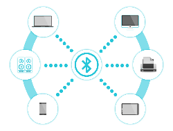

Bluetooth
Es una tecnología de redes inalámbricas de área personal (WPAN) diseñada para la transmisión de voz y datos a distancias cortas entre dispositivos fijos y móviles. Actúa como un enlace inalámbrico que permite la comunicación entre distintos equipos sin necesidad de cables ni configuración compleja.
